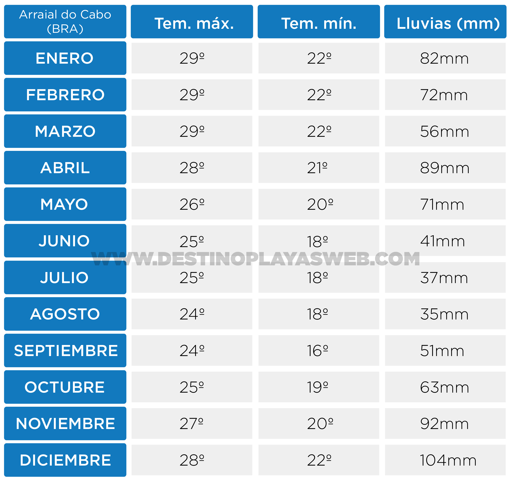

Por Gonzalo Volpe Gómez
En esta mega guía vas a conocer las mejores playas de Brasil, desde las más famosas hasta las más desconocidas. Además, vas a obtener datos precisos sobre el clima, las playas más lindas, cómo llegar y los lugares imperdibles de cada destino.
También vas a poder acceder a mapas de las playas de Brasil personalizados por cada región donde vas a ubicar fácilmente las términales, las paradas de buses, las atracciones, los puntos de partida de lo ferries y obviamente: Las mejores playas. ¡Qué la disfrutés!
Destino Playas es una marca registrada de Gonzalo Volpe Gómez. Se prohibe la copia y distribución de las imágenes de esta guía.
Si bien el estado de Río de Janeiro no es uno de los estados más grandes de Brasil cuenta con la particularidad de encontrarse en una posición privilegiada que le brinda muchísima belleza a sus playas. Literalmente tiene un sinfín de playas para todos los tipos y estilos de viaje.
Es válido destacar que la ciudad de Río de Janeiro es solo una parte del estado de Río de Janeiro, es similar a lo que sucede con Capital Federal y la provincia de Buenos Aires.
El aeropuerto internacional principal de Río de Janeiro es el Aeropuerto Internacional de Galeão.
En mi opinión, la mejor playa de Río de Janeiro y una de las mejores playas de Brasil, se encuentra en Arraial do Cabo y se llama Praia do Forno. La misma se encuentra entre un morro y para ingresar a ella podemos optar por tomar una lancha o realizar una trilha (caminata) de unos 10 minutos. Las playas de Arraial do Cabo se caracterizan por tener aguas extremadamentes cristalinas, tal es así, que se conoce este destino como el "Caribe Brasileño".
¿Cómo llegar a Arraial do Cabo? Podés tomar un bus desde Río de Janeiro a Arraial do Cabo que demora entre 3hs y 4hs o también podés optar por un transfer desde el aeropuerto. En la web de Rodoviária Novo Río podrán ver los precios y la dirección de la terminal. También se puede ir en bus desde Buzios, una ciudad vecina muy pintoresca de la cual les voy a hablar abajo. La empresa que opera el trayecto Buzios-Arraial do Cabo es Salineira
Mapa Río de Janeiro / Mapa Arraial do Cabo
En el siguiente mapa de las playas de Brasil vas a poder ver la ubicación de las principales playas de Arraial do Cabo.
El clima en Arraial do Cabo (Río de Janeiro) tiene temperaturas que oscilan entre los 18º y los 29º con precipitaciones que van desde los 33mm a los 104mm mensuales. Los meses con menos lluvia en Arraial do Cabo (Río de Janeiro) son junio, julio y agosto.
Clima Arraial do Cabo.
Texto completo Arraial do Cabo